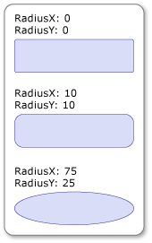

Практическое руководство. Скругление углов объекта RectangleGeometry
Для скругления углов RectangleGeometry, задайте его RadiusX и RadiusY свойства в значение больше нуля. Чем больше значения, тем больше радиус скругления углов прямоугольника.
Пример
В следующем примере показано несколько RectangleGeometry объектов с разными RadiusX и RadiusY параметры. RectangleGeometry Объекты отображаются с помощью Path элементов.
<Page
xmlns="http://schemas.microsoft.com/winfx/2006/xaml/presentation"
xmlns:x="http://schemas.microsoft.com/winfx/2006/xaml"
x:Class="GeoOvwSample.RectangleGeometryRoundedCornerExample">
<Page.Resources>
<!-- Create a grid background to highlight the
coordinate system. -->
<DrawingBrush x:Key="GridDrawingBrushResource"
Viewport="0,0,10,10"
ViewportUnits="Absolute" TileMode="Tile">
<DrawingBrush.Drawing>
<DrawingGroup>
<DrawingGroup.Children>
<GeometryDrawing Brush="White">
<GeometryDrawing.Geometry>
<RectangleGeometry Rect="0,0,1,1" />
</GeometryDrawing.Geometry>
</GeometryDrawing>
<GeometryDrawing Geometry="M0,0 L1,0 1,0.1, 0,0.1Z" Brush="#CCCCFF" />
<GeometryDrawing Geometry="M0,0 L0,1 0.1,1, 0.1,0Z" Brush="#CCCCFF" />
</DrawingGroup.Children>
</DrawingGroup>
</DrawingBrush.Drawing>
</DrawingBrush>
<!-- Create a graph paper style border to frame the rectangles. -->
<Style x:Key="GraphPaperBorderStyle" TargetType="{x:Type Border}">
<Setter Property="HorizontalAlignment" Value="Left" />
<Setter Property="Background"
Value="{StaticResource GridDrawingBrushResource}" />
<Setter Property="BorderBrush" Value="Black" />
<Setter Property="BorderThickness" Value="1" />
<Setter Property="Margin" Value="10" />
<Setter Property="Width" Value="190" />
<Setter Property="Height" Value="90" />
</Style>
</Page.Resources>
<StackPanel Name="MainStackPanel">
<Border Style="{StaticResource GraphPaperBorderStyle}">
<Path Stroke="Black"
StrokeThickness="1"
Fill="#99CCCCFF">
<Path.Data>
<!-- Create a rectangle without rounded corners. -->
<RectangleGeometry
Rect="20,20,150,50" />
</Path.Data>
</Path>
</Border>
<Border Style="{StaticResource GraphPaperBorderStyle}">
<Path Stroke="Black"
StrokeThickness="1"
Fill="#99CCCCFF">
<Path.Data>
<!-- Create a rectangle with rounded corners
by giving the RectangleGeometry a RadiusX
and a RadiusY of 10. -->
<RectangleGeometry
Rect="20,20,150,50" RadiusX="10" RadiusY="10" />
</Path.Data>
</Path>
</Border>
<Border Style="{StaticResource GraphPaperBorderStyle}" >
<Path Stroke="Black"
StrokeThickness="1"
Fill="#99CCCCFF">
<Path.Data>
<!-- Set RadiusX and RadiusY to their maximum values
(half the rectangle's width and
half the rectangle's height). -->
<RectangleGeometry
Rect="20,20,150,50" RadiusX="75" RadiusY="25" />
</Path.Data>
</Path>
</Border>
</StackPanel>
</Page>

Прямоугольники с закругленными углами